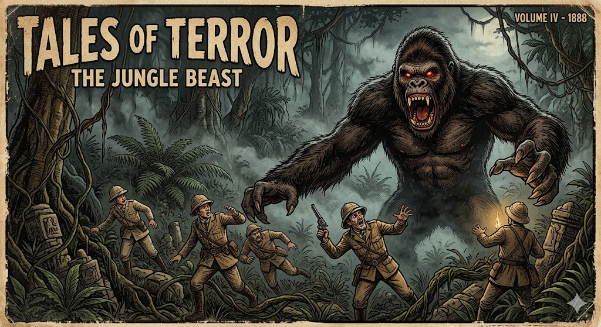

גורילת ההרים
ממפלצת האדם-קוף האכזרית אל הענק העדין
מחקר אטימולוגי: מקור השמות
השם המדעי הטקסונומי: Gorilla beringei beringei
השם מורכב משילוב של היסטוריה עתיקה (יוון/קרתגו) ומחווה מודרנית למגלה המין:
- Gorilla: מקורו במילה היוונית Gorillai (Γόριλλαι), שפירושה "שבט של נשים שעירות". השם תועד לראשונה על ידי חנון הנווט, חוקר קרתגי במאה ה-5 לפנה"ס, שסייר בחופי מערב אפריקה ונתקל ביצורים שעירים דמויי אדם.
- beringei: שם המין ותת-המין, הניתן כמחווה ישירה לסרן רוברט פון ברינגה, שהיה הראשון לזהות ולתעד מדעית את גורילת ההרים.
המגלה והגילוי המדעי
עד תחילת המאה ה-20, סיפורים על קופי-אדם ענקיים החיים על פסגות הרי הגעש נחשבו לאגדות עם של ילידים. המפנה התרחש ב-17 באוקטובר 1902.
סרן רוברט פון ברינגה (Robert von Beringe, 1865–1940), קצין גרמני שפיקד על כוח באזור מזרח אפריקה (כיום רואנדה, אוגנדה והרפובליקה הדמוקרטית של קונגו), הוביל משלחת לחקר הרי הגעש וירונגה. במהלך טיפוס בגובה 3,100 מטרים, משלחתו נתקלה בלהקה של קופי אדם ענקיים ושעירים במיוחד, שלא היו מוכרים למדע. פון ברינגה שלח פוחלץ של אחד הפרטים למוזיאון הזואולוגי בברלין, שם פרופסור פול מאצ'י אישר כי מדובר בתת-מין חדש לחלוטין.
המיתוס מול המציאות
האגדה: ילידים וחוקרים אירופאים מוקדמים תיארו מפלצות צמאות דם, חצי-אדם חצי-חיה, שחוטפות נשים ויכולות לקרוע בני אדם לגזרים (מיתוס שהוליד מאוחר יותר את דמותו של קינג קונג).
המציאות: זואולוגים (כמו דיאן פוסי שנים מאוחר יותר) גילו שגורילות ההרים הן חיות צמחוניות, שלוות, וביישניות ביותר, המקיימות חיי משפחה עשירים ומורכבים. הן יתקפו רק אם יחושו סכנה מיידית למשפחתן.
זואולוגיה: הבדלים בין זכר לנקבה (דו-צורתיות זוויגית)
זכר דומיננטי (כסוף-גב / Silverback)
- משקל: 160 עד 200 ק"ג (ואף יותר).
- גובה: כ-1.70 מטרים (כשהוא עומד על שתיים).
- מאפיינים: פס שיער כסוף/לבן בולט על הגב והירכיים המופיע עם הבגרות.
- מבנה גולגולת: רכס עצם בולט מאוד (Sagittal crest) בקדקוד הגולגולת, המספק עיגון לשרירי הלסת העצומים שלהם ומעניק לראש צורת חרוט.
נקבה
- משקל: 90 עד 100 ק"ג (כחצי ממשקל הזכר).
- גובה: כ-1.50 מטרים.
- מאפיינים: שיער כהה ואחיד ללא הפס הכסוף.
- מבנה גולגולת: מעוגל יותר, ללא רכס העצם הבולט, מה שמקנה לפנים מראה עדין יותר בהשוואה לזכר.
תיעוד חזותי (לחץ להגדלה)

המיתוס: "מפלצת האדם-קוף"

המציאות: כסוף-גב בהרי וירונגה